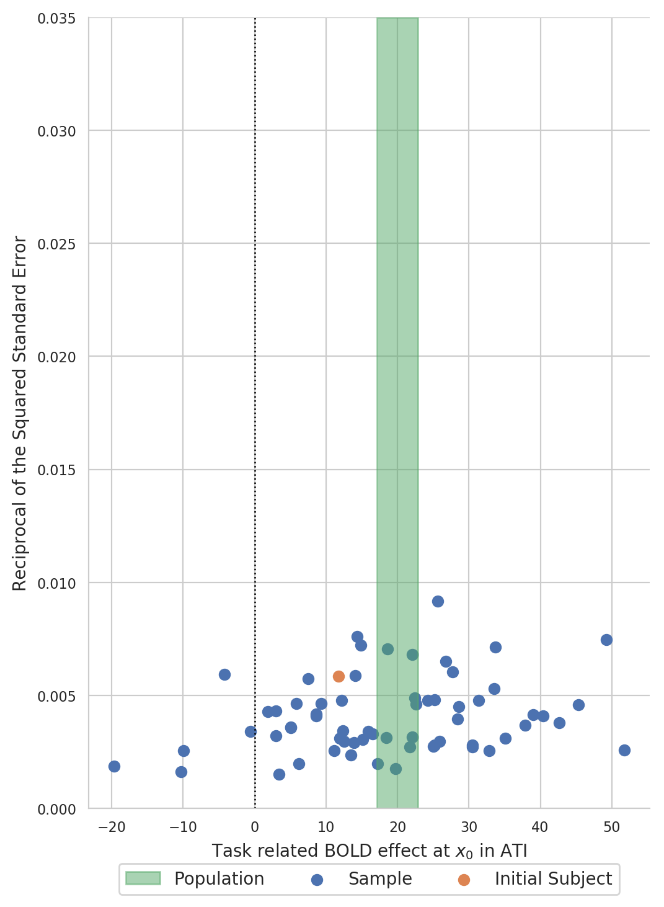

Population inference: Exploratory study¶
In Population inference: Confirmation study, we performed a confirmative study to, well, confirm a previous finding. In this section, we shall perform an explorative study and aim to evaluate where we might expect significant BOLD increases in an FMRI when subjects from a right-handed, healthy population perform a word generating task.
For this a sample of subjects from the population (with a Waterloo
Handedness Score above +20) was drawn at random, their FMRI analysed,
and the results collected in the file tutorial.sample:
fmrisample -v tutorial.sample \
--covariates-query 'waterloo > 20'
Load data and fit the population model¶
from fmristats import *
from fmristats.plot import *
population_sample = load(path_to_sample)
print("""
Number of subjects in total: {:d}
Number of right-handed subjects: {:d}
Number of left-handed subjects: {:d}""".format(
len(population_sample.covariates),
(population_sample.covariates.waterloo >= 20).sum(),
(population_sample.covariates.waterloo <= 20).sum()))
Number of subjects in total: 64
Number of right-handed subjects: 64
Number of left-handed subjects: 0
Let us now fit the population model (which is a random effects meta regression model in fmristats) to the sample of BOLD effects and their respective estimated standard errors:
popmod = PopulationModel(population_sample)
result = popmod.fit()
… not all points in the mask are identifiable.
… points with missing data along subject dimension.
… number of points to estimate: 902629
… perform a meta analysis
Extract the Knapp-Hartung adjusted t-statistics field¶
Extract the Knapp-Hartung adjusted t-statistics field that tests for non-zero, task related BOLD effects:
from fmristats.plot import picture
tstatistics = result.get_tstatistic()
picture(tstatistics)
{kind=link}
Select the highest peak in the t-field¶
Select the highest peak in the t-statistics field:
index = np.unravel_index(np.nanargmax(tstatistics.data), tstatistics.data.shape)
coordinate = tstatistics.apply_to_index(index)
print("""
index in the image : {}
coordinate in standard space: {}
hight of the peak: {:.2f}""".format(
index, coordinate, tstatistics.data[index]))
index in the image : (51, 70, 34)
coordinate in standard space: [-12. 14. -4.]
hight of the peak: 11.61
Plot the respective horizontal slice that goes through the above peak:
picture(tstatistics,3,1,1,[index[-1]],
interpolation='bilinear', mark_peak=True)
{kind=link}
Use the atlasquery tool from the FSL project to see to which
structure these coordinates belong:
atlasquery -a "MNI Structural Atlas" -c -12,14,-4
MNI Structural Atlas
78% Caudate
Create a forest plot of BOLD statistics¶
Extract the estimated BOLD effects and the respective standard errors of the estimated BOLD effects from the sample:
df = population_sample.at_index(index)
df.valid.all()
df.sort_values(by='waterloo', inplace=True)
dm = result.at_index(index)
dm.set_index('parameter', inplace=True)
Define the critical values for the plots:
from scipy.stats.distributions import t
from scipy.stats.distributions import norm
crt_subject = norm.ppf(q=.95)
crt_population = t.ppf(q=.95, df = dm.loc['Intercept', 'df'])
print(crt_subject, crt_population)
1.6448536269514722 1.6694022215079607
Set some general options for the visualisation:
import matplotlib
matplotlib.rc('xtick', labelsize=8)
matplotlib.rc('ytick', labelsize=8)
import seaborn as sb
sb.set_style('whitegrid')
palette = sb.palettes.SEABORN_PALETTES['deep']
figw = 5.842
figh = 8.442
Create a forest plot in ascending order of handiness (left handed on the bottom, right handed on the top):
x = dm.loc['Intercept', 'point']
s = dm.loc['Intercept', 'stderr']
df['yvec'] = range(len(df.task))
df['waterloo'] = df.waterloo.astype(int)
fig = pt.figure(figsize=(figw,figh))
ax = pt.subplot(111)
ax.axvline(0,c='k',lw=.9, ls=':')
ax.errorbar(df.task[df.id!=2], df.yvec[df.id!=2],
xerr=crt_subject*df.stderr[df.id!=2], fmt='o',
label='Sample', c=palette[0])
ax.errorbar(df.task[df.id==2], df.yvec[df.id==2],
xerr=crt_subject*df.stderr[df.id==2], fmt='o',
label='Initial Subject', c=palette[1])
ax.errorbar(x, -1, xerr=crt_population*s, fmt='o',
label='Population', c=palette[2])
ax.axhline(-.5,c='k',lw=.9, ls='-')
ax.set_xlabel(r'Task related BOLD effect at $x_0$ in ATI')
ax.set_ylabel('Waterloo')
ax.yaxis.set_ticks_position('none')
pt.box(False)
pt.yticks(np.hstack((df.yvec, -1)), list(df.waterloo) + ["Meta"] )
pt.legend(loc='lower center', bbox_to_anchor=(.5, -0.2), ncol=3)
{kind=link}
Create a funnel plot of BOLD statistics¶
Create a funnel plot with the estimated BOLD effect on the x-axis and the reciprocal of the squared standard error on the y-axis:
{kind=link}
Formal testing¶
Point estimate, (unadjusted) confidence interval, and (unadjusted) p-value of BOLD effect of the word generating task at the point \(x\) in the population (yes, now we have a multiple testing problem):
x = dm.loc['Intercept', 'point']
s = dm.loc['Intercept', 'stderr']
print("""
Point estimate of the BOLD effect: {:.2f}
Lower bound of a 95% confidence interval: {:.2f}
Upper bound of a 95% confidence interval: {:.2f}
p-value for ≠0: {:.4g}""".format(
x, x-crt_population*s, x+crt_population*s,
dm.loc['Intercept', 'pvalue']))
Point estimate of the BOLD effect: 19.99
Lower bound of a 95% confidence interval: 17.12
Upper bound of a 95% confidence interval: 22.87
p-value for ≠0: 1.342e-17
Different strategies for how to deal with this kind of multiple testing problem are discussed in the chapter: Thresholding.